<page-util is-owner=isOwner is-online="appOnLine" is-single-item=false deleting=deleting changing=changing selected-array=selectedArray displayed-array=deck.Cards add-fn=createCard(event) del-fn=deleteCards()></page-util>
<walkthrough
            walkthrough-type="transparency"
            focus-element-selector="#cardview-deckinfo"
            main-caption="This panel shows information on current Deck"
            force-caption-location="BOTTOM"
            is-active="showDeckInfo"
            has-glow="true"
            on-walkthrough-hide="showUtilButton=true">
</walkthrough>
<walkthrough
            walkthrough-type="transparency"
            focus-element-selector="#util-button"
            icon="single_tap"
            main-caption="Click here for creating, updating and deleting Cards in current Deck"
            force-caption-location="BOTTOM"
            icon-padding-left="0"
            icon-padding-top="20"
            has-glow="true"
            is-active="showUtilButton">
</walkthrough>

<!-- <div layout="column" layout-align="top center"> -->
  <div id="cardview-deckinfo">

    <!-- <div>{{selected[0]}}</div> -->
    <div layout-align="center start" class="metadata-wrapper">
    <!-- icons here are dummied, refer to https://material.angularjs.org/latest/api/directive/mdIcon for customized icons -->
      <div layout="row" layout-align="start center">
        <div class="metadata-title-text">{{ deck.name | limitTo:30}}</div>
      </div>
      <div layout="row" layout-align="start center">
        <div ng-if="deck.isPublic">Public</div>
        <div ng-if="!deck.isPublic">Private</div>
      </div>
      <div ng-if="!isOwner" >
        <md-button class="md-raised button__fork" ng-click="forkDeck(deck.id)">
          <md-icon md-font-set="md">call_split</md-icon>Fork
        </md-button>
           
      </div>


      <div layout="row" layout-align="start center">
        <span>Created By </span>
        <span ng-click="viewUserProfile(deck.User.id)" class="forked-from">{{deck.User.name | limitTo:40}}</span>
      </div>
      <div ng-if="deck.isForked" layout="row" layout-align="start center">
        <span>Forked from </span>
        <span ng-click="viewUserProfile(deck.forkedFrom)" class="forked-from">{{originalUser.name | limitTo:40}}</span>
      </div>

      <div layout="row" layout-align="start center">
        <md-chips class="metadata-chips">
          <md-chip ng-repeat="tag in deck.Tags" ng-class= deck.color+"-deck-deckview" >{{tag.name}}</md-chip>
        </md-chips>
      </div>
    </div>
  </div>
  <div ng-if=isOwner class="no-deck" layout="column" layout-align="center center" ng-show="noCard">
    <h2>Start by adding a new card</h2>
    
  </div>
  <div id="main-cardview" layout-margin layout-wrap layout="row" layout-xs="column" layout-align="center center">
    <div ng-repeat="card in deck.Cards" ng-class=deck.color+"-deck-deckview" ng-click="viewCard(deck.id, card.id)" class="deck-deckview">
      <md-checkbox class="card-select" aria-label="select deck" ng-disabled="!deleting&&!changing" ng-checked="isSelected(card)" ng-click="select(card, $event); $event.stopPropagation();"></md-checkbox>
      <div align="center" class="card-preview">{{ card.front | limitTo:55}}</div>
    </div>
  </div>
<!-- </div> -->
